应用层概述
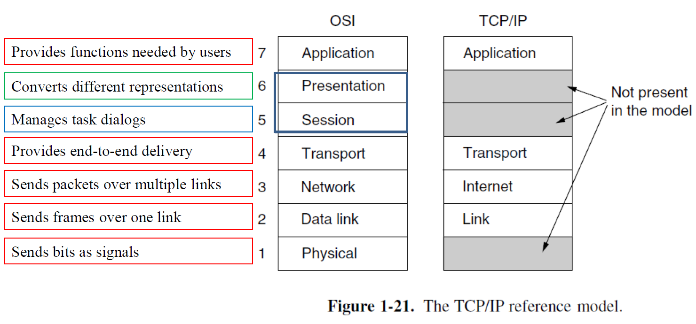
网络应用不仅仅是应用层协议.包括
- 客户端
- 主动与服务器建立联系connect()
- 向服务器请求服务
- 服务器端
- 应用层协议
应用程序需要哪种运输服务应参考的参数
- Data Loss
- 容错loss-tolerant 比如音频视频
- 文件传输\telnet等则需要百分百可靠
- 带宽bandwidth
- 多媒体需要最大带宽
- elastic: 弹性 可以使用任何可用的带宽
- Timing
- 语音通话等需要低延迟才能有效工作
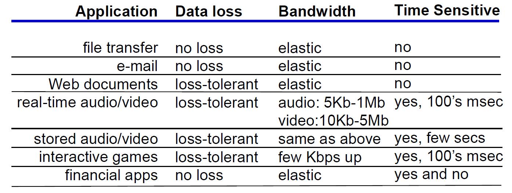
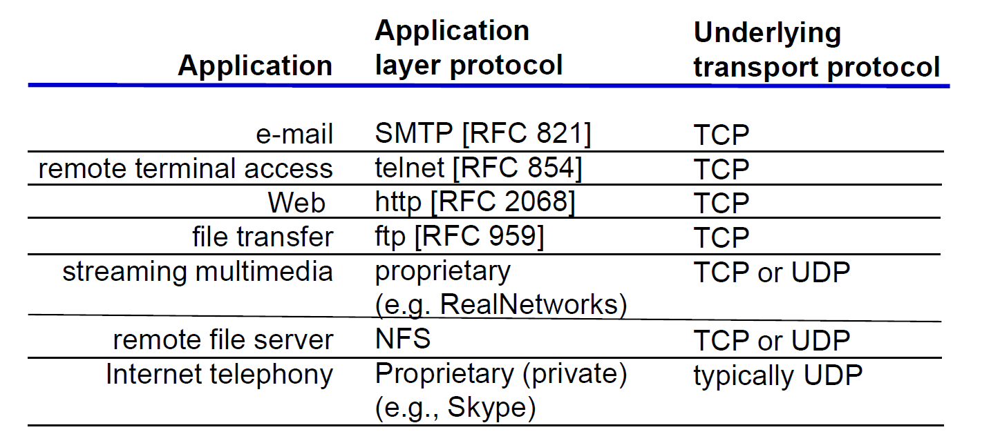
- 语音通话等需要低延迟才能有效工作
重要的应用层协议
DNS 域名系统
理论上说，只要我们记住需要访问的资源部署在哪个 IP 地址上，我们就可以借此使用到对应的服务。
- 但是如果服务更换了一个主机部署，服务提供方就需要将 IP 地址通知到每一个人；
- 同时人们也倾向于使用更具有意义的字符串而不是 IP 地址来记忆。
因此人们希望建立一个从便于记忆的主机名和 IP 地址之间的映射解决这些问题。因此我们引入了 DNS, Domain Name System。
- 本质是基于域名的分层命名方案和分布式数据库
- 将名称映射到IP地址,应用程序需要调用一个称为the resolver并将名称作为参数传递给它
- 查询和响应消息作为UDP数据包发送
为什么不是中心式
• Single point of failure 单点故障
• Traffic volume 流量容量
• Distant name server means slow response 远距离名称服务器导致响应缓慢
• Scalability 可拓展性
层级结构:
mappings分布在dns服务器中,dns服务器分为三种
- 根dns服务器
- 13个逻辑根dns服务器a.root-servers.net to m.root-servers.net
- 每个服务器实际上是服务器集群
- 所有域名服务器都需要根服务器的ip地址
- 通过name.ca配置文件处理
- 有1959(root-servers.org 2025.12.9) 个分布式服务器instances
- Most servers are reached by IP anycast.(通过IP anycast共享同一个ip地址)
- 在任播路由中，数据包被传递到目标地址的最近实例。
- 服务器可通过 IPv4 和 IPv6 访问
- 13个逻辑根dns服务器a.root-servers.net to m.root-servers.net
- 顶级域名TLD dns服务器
- authoritative DNS server
The DNS Name Space
顶级域名分成两类: generic(通用) and countries(国家).
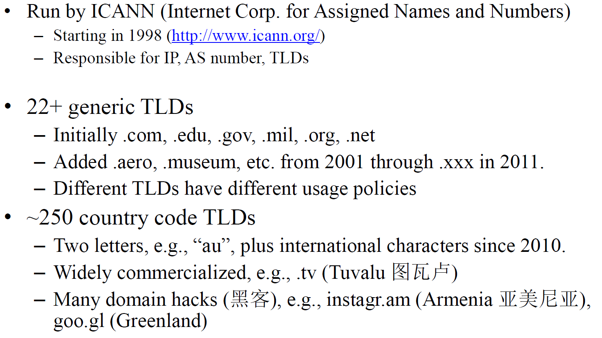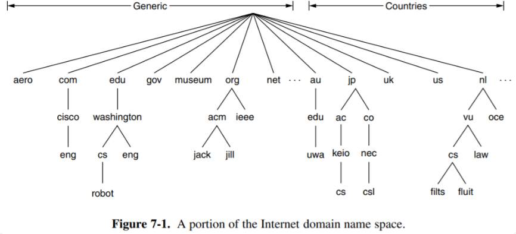
DNS Zones

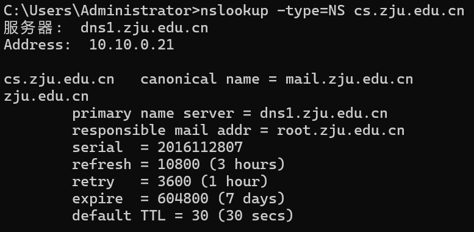
Domain Resource Records 资源记录
每个域，无论是单个主机还是顶级域，都可以有一组与之关联的资源记录。这些记录构成了DNS数据库
单个主机:最常见的资源记录是它的ip地址
当解析器向DNS提供一个域名时,返回的是与该域名关联的资源记录
DNS的主要功能是将域名映射到资源记录
资源记录是五元组
Domain_name Time_to_live Class Type Value
- 域名 表示该记录适用的域,每个域存在许多记录,数据库的每个副本保存关于多个域的信息 the primary search key
- ttl 指示记录的稳定性
- 类字段 对于互联网信息总是IN
- 类型字段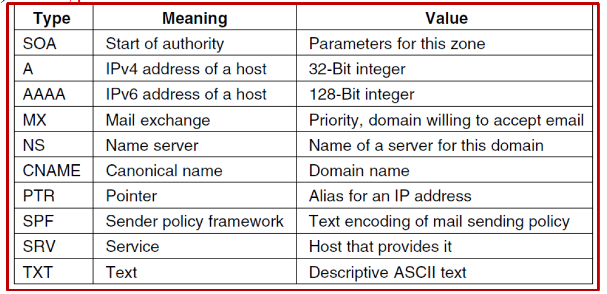
SOA 记录提供了关于名称服务器区域信息的主要来源的名称。
PTR 指向另一个名称。它几乎总是用于将名称与 IP 地址相关联，以允许查找 IP 地址并返回相应计算机的名称。 -反向查询
MX record, it specifies the name of the host prepared to accept email for the specific domain
SRV 是一种较新的记录类型，允许在域中识别用于给定服务的主机。该记录是对 MX 记录的一般化，MX 记录执行相同的任务但仅用于邮件服务器。
SPF（发件人策略框架）也是一种较新的记录类型。它允许域编码关于域中哪些机器将向互联网其余部分发送邮件的信息。这有助于接收机器检查邮件是否有效。
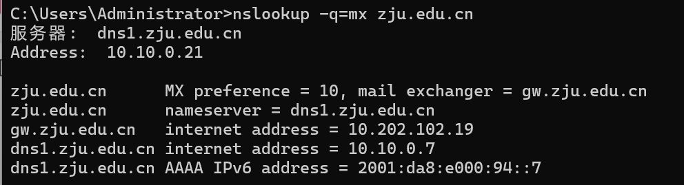
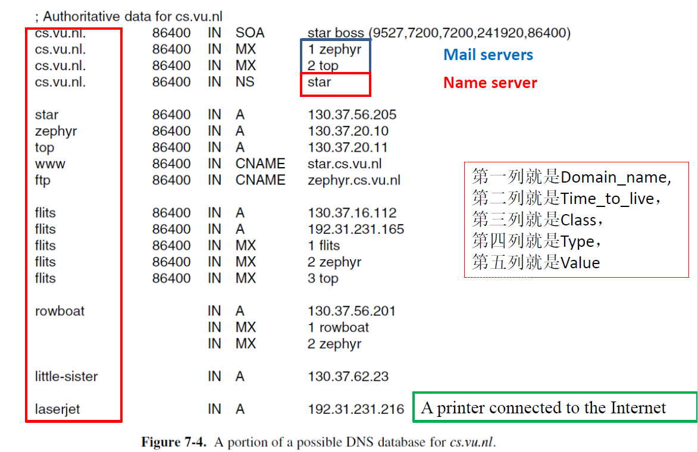
DNS Resolution
DNS 协议让主机能够将任何主机名（域名）解析为 IP 地址
如果未知，可以从根名称服务器开始并逐级查询各个区域
递归查询:
- 递归 DNS 查询是指 DNS 解析器（通常是客户端 DNS 服务器）要求另一个 DNS 服务器处理整个解析过程的查询。客户端 DNS 服务器向递归 DNS 服务器发送单个查询，并等待最终答案。
- 它简化了客户端 DNS 解析器的流程。解析器只需发送一个查询并等待响应，无需处理转发或进行多个请求。– 它可以潜在地提供更快的响应，因为递归 DNS 服务器可以通过使用其缓存来优化查询过程。如果它之前已经解析过该域名或其缓存中有相关信息，它可以更快地返回答案。

- 如果递归 DNS 服务器收到大量请求，特别是当它们必须为每个查询执行完整的解析过程时，可能会被过载。
- 递归 DNS 服务器存在安全风险。如果恶意行为者能够控制递归 DNS 服务器，他们可以操纵 DNS 解析结果，导致网络钓鱼或将用户重定向到恶意网站等问题
迭代查询:
- 迭代 DNS 查询是 DNS 解析器（通常是客户端 DNS 服务器）向不同的 DNS 服务器进行一系列请求，直到获得所需答案的过程。当 DNS 解析器发送迭代查询时，它从根 DNS 服务器开始。
- 假设本地 DNS 解析器想要解析域名”www. cs.washington.edu”。
- 本地 DNS 服务器首先联系根 DNS 服务器。但根 DNS 服务器不直接知道www.cs.washington.edu的 IP 地址，但它知道顶级域（TLD）服务器的 IP 地址（如.edu 服务器）。因此，它用相关 TLD 服务器的 IP 地址响应本地 DNS 解析器。
- 本地 DNS 解析器随后联系 TLD 服务器。TLD 服务器依次提供域名”washtington.edu”的权威 DNS 服务器的 IP 地址。
- 最后，本地 DNS 解析器联系权威 DNS 服务器，该服务器提供”www .cs.washington.edu”的 IP 地址。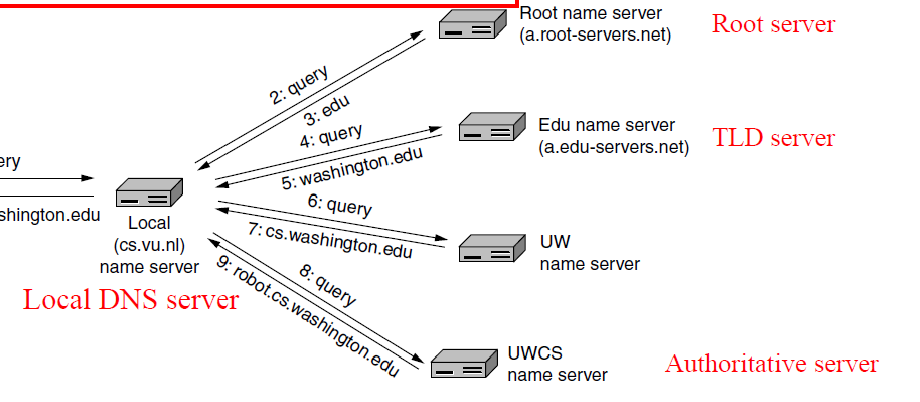
- 它减少了对根服务器和 TLD 服务器之外的 DNS 服务器的负载，因为本地 DNS 解析器在遵循转介方面完成了大部分工作。本地 DNS 服务器可以在一个客户端池上进行缓存以获得更好的性能
- 该过程可能会较慢，因为解析器必须发出多个请求并等待来自不同服务器的响应。此外，过程中的每一步都可能引入额外的延迟。
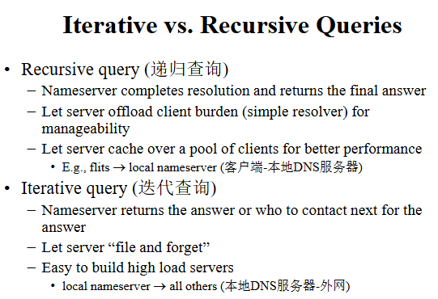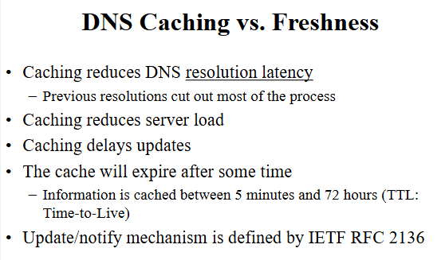
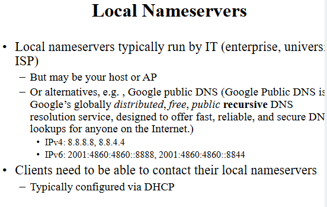
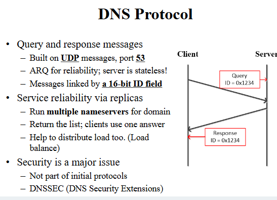
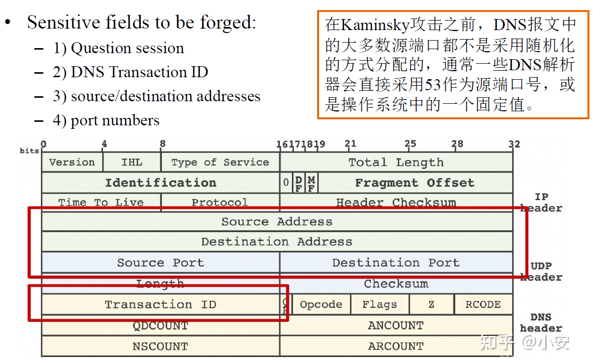
FTP
用于向远程主机传输文件或从远程主机接收文件。百分之百可靠传输
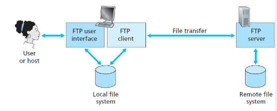
– 1) 用户首先提供远程主机的主机名，导致本地主机中的 FTP 客户端进程与远程主机中的 FTP 服务器进程建立 TCP 连接。
– 2) 用户随后提供用户标识和密码，这些信息通过 TCP 连接以 FTP 命令的形式发送。
– 3) 一旦服务器授权用户，用户就可以将存储在本地文件系统中的一个或多个文件复制到远程文件系统中（或反之）。
FTP 使用两条并行的 TCP 连接来传输文件，一条控制连接和一条数据连接。
- 控制连接用于在两台主机之间发送控制信息，包括用户识别、密码、更改远程目录的命令，以及”上传”和”下载”文件的命令。
- FTP 被称为带外发送其控制信息。（正因为这个控制连接（独立的），FTP 是”带外”的。
- 从客户端到服务器的命令和从服务器到客户端的应答通过控制连接以 7 位 ASCII 格式发送。
- 数据连接用于实际发送文件
一种异步通信媒介,包括
– 用户代理（客户端，例如 Outlook、Gmail 网络界面）
– 消息传输代理（邮件服务器）
– 简单邮件传输协议：SMTP
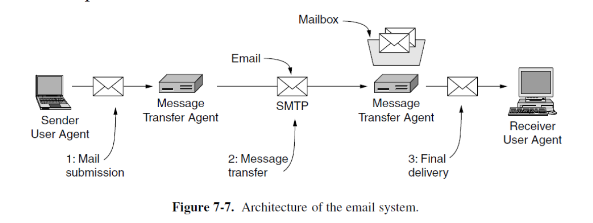
SMTP
– RFC 5321
– 它利用 TCP 的可靠数据传输服务将邮件从发送方邮件服务器传输到接收方邮件服务器。
– 与大多数应用层协议一样，SMTP 有两个方面：客户端方面在发送方邮件服务器上执行，服务器端方面在接收方邮件服务器上执行。
- 首先，客户端 SMTP（运行在发送邮件服务器主机上）通过 TCP 建立连接到服务器 SMTP（运行在接收邮件服务器主机上）的 25 端口。
- 如果服务器宕机，客户端稍后重试。
- 一旦这个连接建立，服务器和客户端进行应用层握手
- 在 SMTP 握手阶段，SMTP 客户端指示发件人的电子邮件地址和收件人的电子邮件地址。
- 一旦 SMTP 客户端和服务器相互介绍后，客户端就会发送消息
- 如果客户端有其他消息要发送到服务器，则会在同一 TCP 连接上重复此过程。
- 否则，它指示 TCP 关闭连接。
Email Message Format
– 信封封装了消息。它包含传输消息所需的所有信息，例如目标地址、优先级和安全级别。消息传输代理使用信封进行路由，就像邮局所做的那样。
– 信封内的消息由两个独立部分组成：头部和正文
RFC
MIME
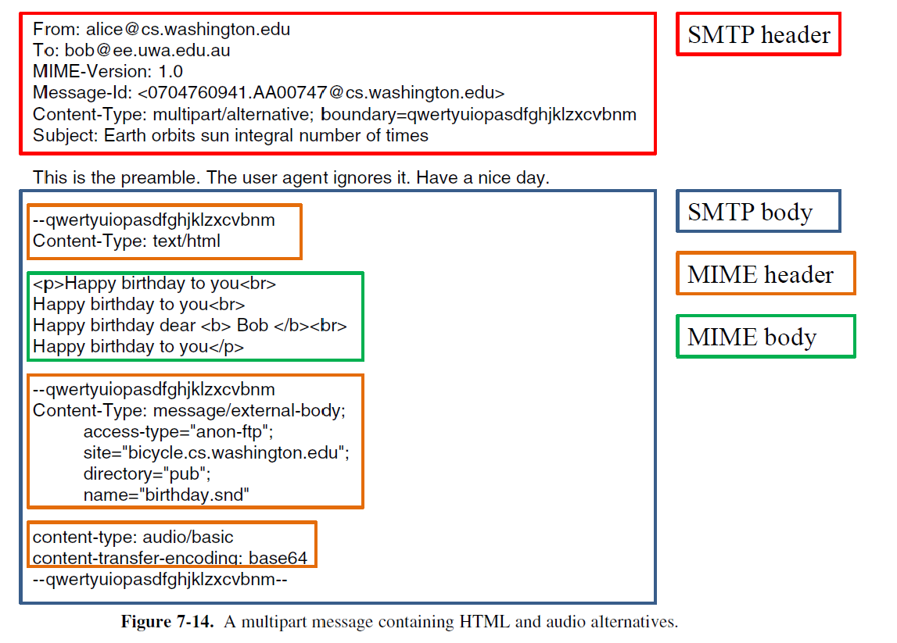
HTTP
The HyperText Transfer Protocol超文本传输协议
- Web 的应用层协议，是 Web 的核心。
- 是一个简单的请求-响应协议，通常运行在 TCP 上。
- HTTP 与 Web 页面如何被客户端解释没有任何关系。
- Web 页面如何被客户端解释: 浏览器
网页（也称为文档）由对象组成。对象就是一个文件，如 HTML 文件、JPEG 图像、Java 小程序或视频剪辑，可以通过单个 URL 访问。


- Domain names can be either absolute or relative. An absolute domain name always ends with a period (i.e. dot) (e.g., eng.cisco.com.), whereas a relative one does not. Relative names have to be interpreted in some context to uniquely determine their true meaning. In both cases, a named domain refers to a specific node in the tree and all the nodes under it.
- To create a new domain, permission is required of the domain in which it will be included. Once a new domain has been created and registered, it can create subdomains without getting permission from anybody higher up the tree.
Name Servers


- 都用 recursive query 会导致 root name server 负载过大。
- 整个 Internet 依赖于 root name server，因此实际上它们能力超强且有多份冗余；query packet 通过 anycast 找到其中之一。
- Name server 有缓存。上面的例子展示的是没有缓存的情况；事实上部分 name server 可能已经将内容缓存起来。由于缓存不一定确保正确，因此 name server 上的 records 也是有时限的。
- DNS 的 query 和 response 采用 UDP 发送；DNS name server 使用 53 号端口。如果很短的时间内没有收到 response，DNS client 就重新发一个；如果重复若干次仍然失败，就尝试另一台 name server。
Domain Resource Records


Architecture and Services
-

-
UA, User Agent: 也叫 Email Reader，是一个 program，给用户看的。
-
Message Transfer Agent: 负责发送和接收邮件，同时向发送方报告发送情况。有可能在 ISP 上。
-
收发过程
-
发送方用 UA 编辑好了以后通过 SMTP（后面讨论）给 Message Transfer Agent
-
邮件进入 MTA 的缓存
-
SMTP client process 定期扫描 MTA 缓存，发现了以后与接收端 SMTP server process 建立 TCP 连接（可能需要先 DNS），端口号为 25
-
TCP 连接建立好了以后 SMTP 开始发送邮件，发完了以后 SMTP 关闭 TCP 连接
-
接收端 MTA 中的 SMTP 进程收到邮件后就放到收信人的用户邮箱
-
收信人打算收信时，调取 UA，通过 POP3 / IMAP（后面讨论）取回邮件
Message Formats


SMTP, Simple Mail Transfer Protocol

- SMTP 是一种 ASCII 协议，这样方便调试。
POP3, Post Office Protocol 3
- TCP, port = 110
- 下载并保留 or 下载并删除
IMAP, Internet Message Access Protocol
- POP3 的改进版；TCP, port = 143
WWW
Architecture Overview
- Web = World Wide Web，由 Web pages 组成。观看它们的程序是 browser
- URL, Uniform Resource Locator，
:// : / 例如 http://www.yuque.com/xianyuxuan 中 http 说明了访问这个页面的方式，www.yuque.com 经过 DNS 解析后可以得到 IP 地址，xianyuxuan 说明了具体要看的是这个主机上的什么。 
HTTP, HyperText Transfer Protocol
- TCP, port = 80，ASCII 协议。比较通用，不限于 web。
- HTTP request 可以在 TCP 第三次握手就带上


FTP
File Transfer Protocol。允许客户指明文件的类型和格式，因此可以在不同架构、操作系统之间的文件传输；允许文件具有存取权限，提供不同用户的权限，因此可以实现远程文件管理和文件共享。
server listen port 21, client TCP 连接之。随后建立数据连接，有 2 种方式
- 主动模式 POST：client 开个端口 N（一般是 ctrl 的端口 + 1），给 server 发 POST N，server 用 port 20 连接 N。问题在于如果 client 有 NAT 之类的可能连不上。
- 被动模式 PASV：client 给 server 发 PASV，server 开一个随机端口并且告诉 client，client 连这个端口。问题在于配置复杂而且不利于安全。